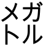

「キュリー」という単位があります。放射能の研究をしたキュリー夫妻にちなんで名付けられた放射能の単位ですね。今では使われなくなっているようですが。
で、活字の中にはこれを「㌒」と一文字分に収めたものが存在します。
機種依存文字とか呼ばれあまり使うのは好ましくないとされています。実際Macの人には見えていないことでしょう。
さてその㌒、「Arial Unicode MS」というフォントでみてみましょう。
ちなみにArial Unicode MSというのはMS officeに含まれるフォントで、世界の様々な文字を網羅しているなかなかすさまじいフォントです。
以前はネット上で無料配布されていたのですが現在はOfficeを買う以外に入手法は無いようです。この先の文字が見えなかったらOfficeの入ったPCで見てください。
さて、誤字。ここまでたくさんの文字を書いてたらしょうがないことなのかなとも思いますが…
…まあ見て下さい。
㌒
はい。見えましたか?
キュリー…じゃないですね。
もう一度。今度は大きく…
…
…
…
…
…
…
…
…
…
…ギュ…?
注：もしかするとバージョンなどによっては直ってるかもしれません。
見られない人のために画像でも張っておくと、
おまけ：メガトル。
字： ㍌
画像：
正：㍌